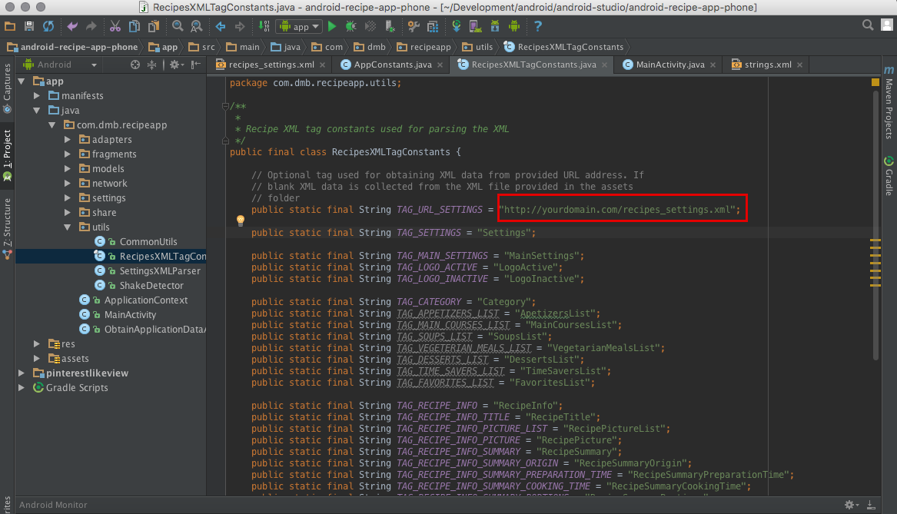

“Android Recipe App” Documentation by “dmb TEAM” v2.0
“ Android Recipe App ”
Created: 01.06.2014
Updated: 21.12.2015
By: dmb TEAM
Thank you for purchasing our android application. If you have any questions that are beyond the scope of this help file, please feel free to email us via the Contact Form here. Be sure not to contact us via email, if you already posted a comment or vice versa. Posting duplicate requests won't speed up, but will slow down the process of getting reply.
Important
What stays behind Support:- Responding to questions or problems regarding the item and its features
- Fixing bugs and reported issues
- Customization and installation services
- Support for third party software and plug-ins
Table of Contents
I. How to configure/set up the project?
II. How to Customize "Android Recipe App"?
- Add/Remove Recipes
- Local or Remote (web hosted) XML?
- Splash Screen
- Admob
- Other settings
- About Page setup
- Useful tutorials
I. How to configure/set up the project?
1. What tools you need? - top
The product is created within Android Studio IDE. You can download it from here: Download Android Studio.. In addition, on this page you can find useful information how the IDE is working, features, system requirements, tutorials and so on.
2. Import the project into Android Studio - top
Step 1: Extract the content from the .zip file that you've just downloaded from CodeCanyon. Then start Android Studio and when you see the Welcome to Android Studio screen click on Open an existing Android Studio project
Step 2: After that you will get a pop-up and you should locate where you extracted the .zip file. Select the root directory:
Step 3: When you click the OK button, you will see another pop-up (if you have already used Android Studio, this dialog won't show up), where you should check the Use local gradle distribution option. And here you should locate where is your local Gradle distribution. Of course you should download it first from here. When you are ready, click Ok

Step 4: After Step 4, you will see the 1st screen below. Just click on the Project and you will see the project's structure (2nd screen below):

Step 5: We can perform quick test, if everything is ok by selecting the app folder on the left and clicking the green Run button. This way we will launch the app on a Emulator or real device, if you have connected it to your machine. Currently we don't have real device connected (as we can see from the dialog), so we will run it on a Emulator Nexus 5 API 21 x86.
That's it. You are ready to continue with the customization.
III. How to Customize "Android Recipe App" ?
1. Add/Remove Recipes - top
To add Recipes in your own application, you just need to open the app/assets/recipe_settings.xml file and to edit it:

Description of the XML file:
Elements meaning:
Element 'LogoActive' - name of the image to be displayed as active logo in the left menu
Element 'LogoInactive' - name of the image to be displayed as active logo in the left menu
Element 'Category'
- attribute 'name' - name of the Category
- attribute 'icon' - icon of the Category
Sub-Element 'RecipeInfo' - represents a single recipe and the info about it
Sub-Element 'RecipeTitle' - put the name of the meal here
Sub-Element 'RecipePictureList' - array containing all pictures
-- Sub-Element 'RecipePicture' - put the picture of the meal here. You can have several pictures per recipe.
Sub-Element 'RecipeSummary' - summary of the recipe; contains the following:
-- Sub-Element 'RecipeSummaryOrigin' - origin of the recipe
-- Sub-Element 'RecipeSummaryPreparationTime' - preparation time of the meal
-- Sub-Element 'RecipeSummaryCookingTime' - cooking time of the meal
-- Sub-Element 'RecipeSummaryPortions' - portions of the meal
-- Sub-Element 'RecipeSummaryCalories' - calories of the meal
-- Sub-Element 'RecipeSummaryDescription' - description of the meal
Sub-element 'RecipeIngredientsList' - list of recipe ingredients
-- Sub-Element 'RecipeIngredient' - represents a recipe ingredient
-- -- Sub-Element 'RecipeIngredientsName' - name of the ingredient
-- -- Sub-Element 'RecipeIngredientsQuantity' - quantity of the ingredient
Sub-element 'RecipeStepsList' - list of recipe steps
-- Sub-Element 'RecipeStep' - represents a step to make the recipe
-- -- Sub-Element 'RecipeStepName' - name of the recipe step
-- -- Sub-Element 'RecipeStepDescription' - description of the recipe step
You have to give you some time to explore the demo XML file in order to understand how to build your own recipes. Basically, it's simply organized in two main sections: MainSettings and Category. Each Category can contain several recipes.
2. Local or Remote (web hosted) XML? - top
By default the app will use the local XML file located within the assets folder. This means that your app won't need internet connection in order to display the already added recipes. The main advantage of this is that everything will be loaded very fast. The main drawback is that, when you want to add/remove recipes, you have to release new version of the product. We recommend to use local XML file, when you won't perform often changes to the recipes.
If you plan to make regular and often changes to the recipes, it's better to use Remote (web hosted) XML file. You just need to take the one from assets folder and to upload it to your web host. Then you have to set up the app to use that Remote XML. To do so, open the RecipesXMLTagConstants.java file (class) and look for the TAG_URL_SETTINGS definition. By default it has no value, which means that the Local XML will be used. So, you have to change its value with the URL to the web hosted XML, like in the example below, where http://yourdomain.com/recipes_settings.xml is the URL to the uplaoded XML:

Choosing to use the Remote (web hosted) XML leads to the following: (1) The user will need internet connection in order to load the recipes, (2) There is no need to upload new version of the product, when you add/remove recipes to the Remote XML - they will be automatically loaded, (3) The recipes won't be loaded as fast as when using the Local XML.
3. Splash Screen - top
To customize the Splash Screen do the following:
- Replace the splash.png file in folders drawable, drawable-xhdpi, drawable-hdpi, drawable-mdpi and drawable-ldpi with your own splash image.
4. Admob - top
To turn on Admob open the AppConstants.java file, which you can find here:
- If you want to have ads in your home screen (the screen with the slider) you need to set the flag ENABLE_ADMOB_HOME_PAGE in class AppConstants.java to true.
- If you want to have ads in your single joke screen (the screen that is displayed after you click some item from home screen) you need to set the flag ENABLE_ADMOB_SINGLE_NEW in class AppConstants.java to true.
- Set the ADMOB_REFRESH_INTERVAL value in class AppConstants.java with the number of seconds to refresh the advertisements.
- Set the admob_id string property with your own admob id. You have to do that editing the strings.xml file within the res/values/ folder. This is very important and without setting it you will never see ads in your application.

5. Other settings - top
There are some less important but useful settings in AppConstants.java file. Their usage is described in the file.
6. About Page Setup - top
a) To setup the content of the About Page, open the AppConstants.java file and scroll down to find the following declarations:
Just change the values between the double quotes (i.e. "Android Recipe App") and you are done.
b) If you want to change the label "About Page" that is displayed in the Left Sliding Menu, open the MainActiviy.java and find the following declaration:
Just change the values between the double quotes (i.e. "About Page") and you are done.
7. Useful tutorials - top
7.1. How can I change the package name? - you need to do it, before uploading the app to Google Play Store.
7.2. How to export certified apk file for Google Play Store (Official Documentation) or Stackoverflow thread
7.3. Launch Checklist for Google Play Store
7.4. Publishing Android Application (Official Documentation).
"Android Recipe App" by dmb TEAM